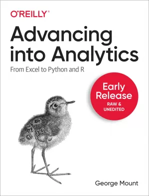

Advancing into Analytics
Data analytics may seem daunting, but if you're an experienced Excel user, you have a unique head start. With this hands-on guide, intermediate Excel users will gain a solid understanding of analytics and the data stack. By the time you complete this book, you'll be able to conduct exploratory data analysis and hypothesis testing using a programming language.
